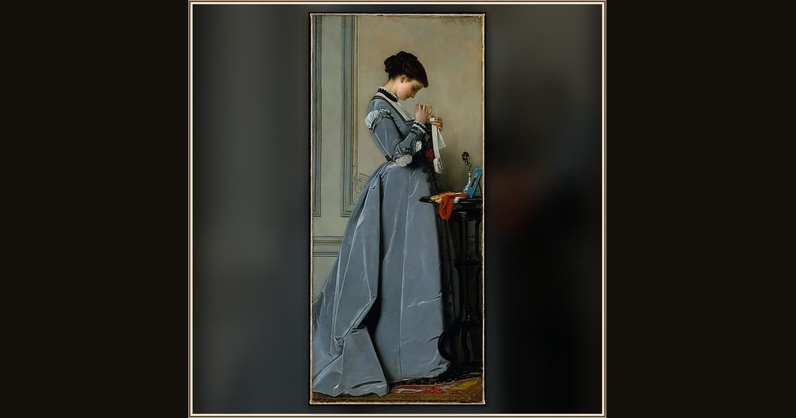

Penelope
Charles-François Marchal · ca. 1868 · The Metropolitan Museum of Art · New York, USA
Penelope waits and weaves, unpicking her work each night to hold the suitors off until Odysseus can find his way home. Explore its place in Book II of the Odyssey.